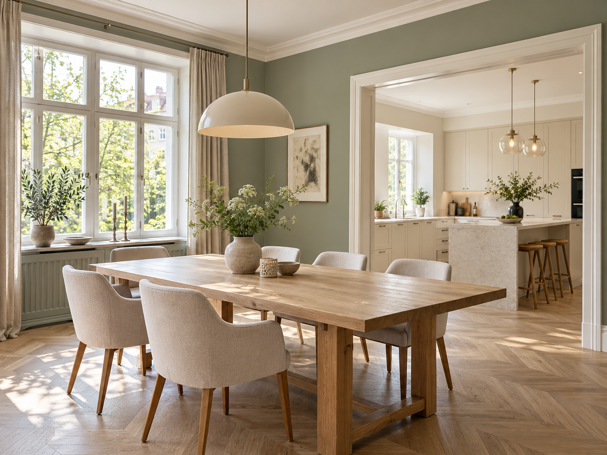
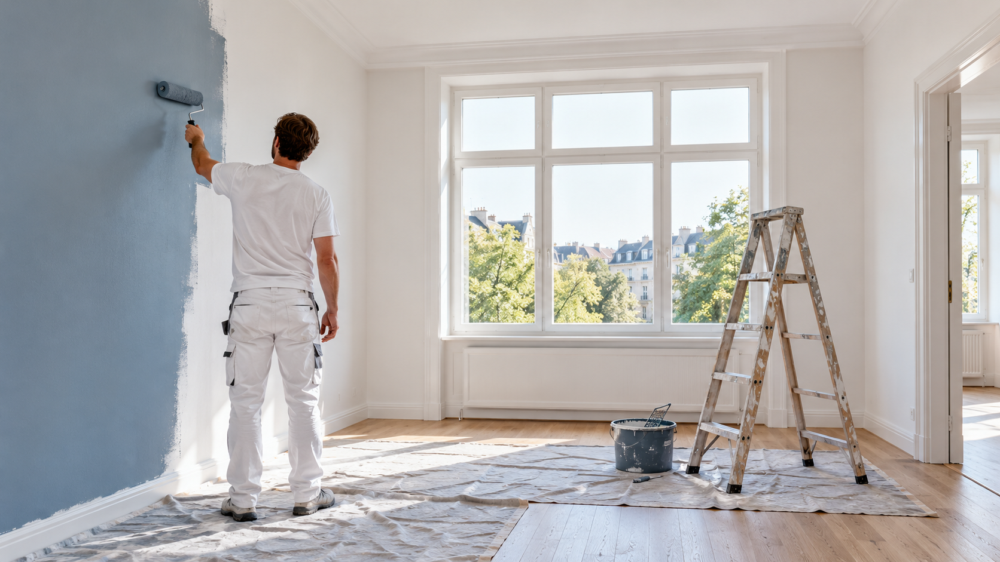
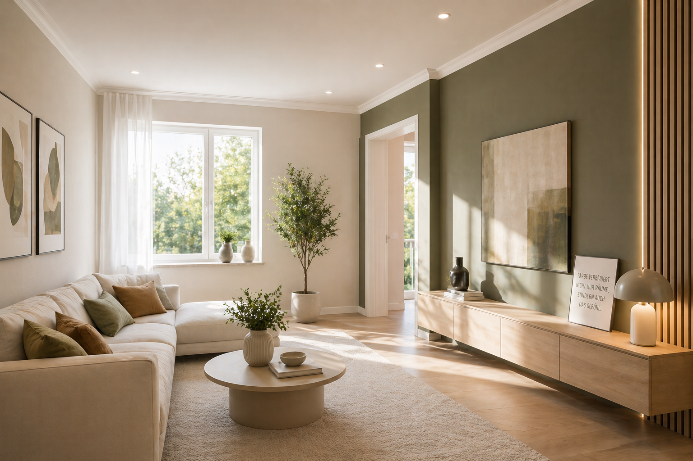
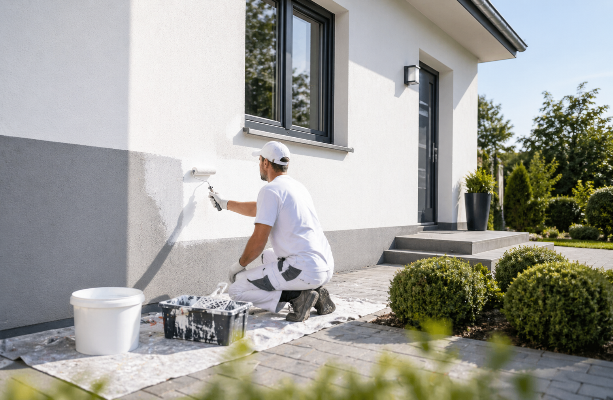
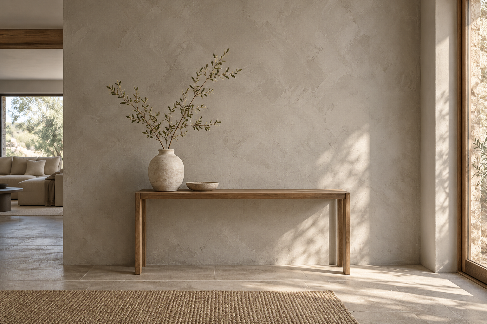
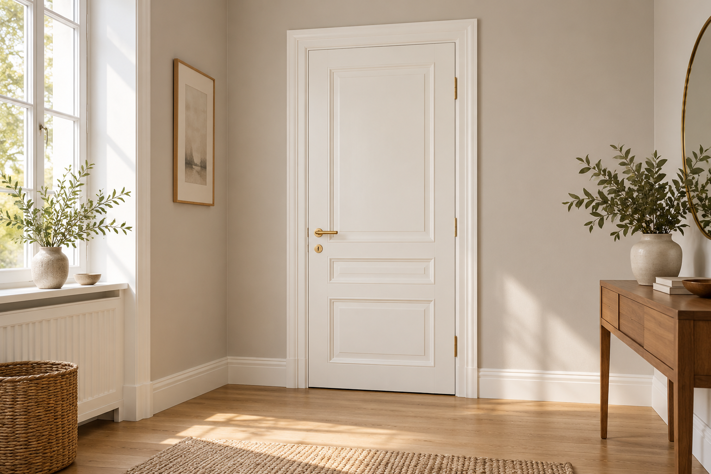
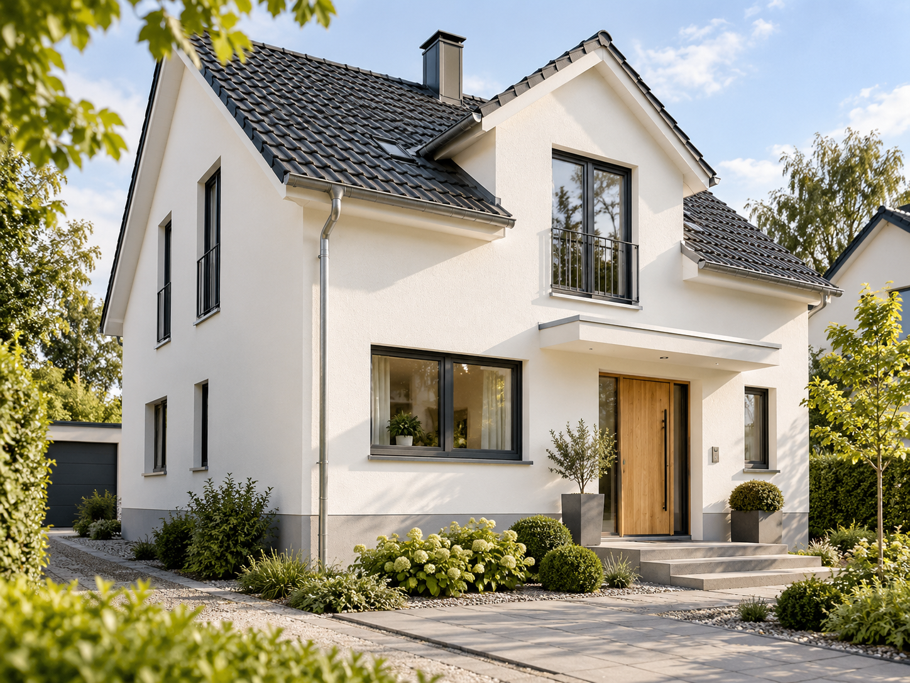

Ein Ton, der verbindet.
Farbberatung · Akzentwand / Gestaltungsbeispiel
F&P Malerbetrieb steht für hochwertige Maler- und Lackierarbeiten, stimmige Farbkonzepte und zuverlässige Umsetzung – in privaten und gewerblichen Räumen.

Ob Innenraumgestaltung, Fassadenanstrich oder kreative Wandtechniken – wir stimmen unsere Leistungen auf Ihre Räume und Wünsche ab.
Alle Leistungen ansehen
Farben, Tapeten und stimmige Farbkonzepte für ein schönes Wohngefühl.

Wetterfeste Beschichtungen und gepflegte Fassaden für einen starken ersten Eindruck.

Glatte Wände, feine Strukturen und individuelle Gestaltungsflächen.

Türen, Rahmen und Holzflächen – präzise bearbeitet und dauerhaft schön.

Farbberatung · Akzentwand / Gestaltungsbeispiel

Fassadengestaltung / Gestaltungsbeispiel

Wir verbinden handwerkliche Erfahrung mit persönlicher Beratung und klaren Absprachen. Denn zu einem schönen Ergebnis gehört auch ein Ablauf, auf den Sie sich verlassen können.
Erzählen Sie uns von Ihrem Vorhaben. Wir beraten Sie persönlich, kostenlos und unverbindlich.